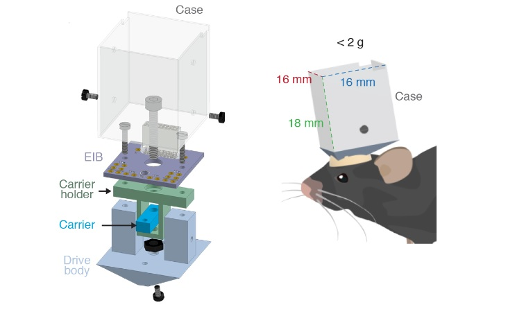

DMCdrive: a $10 micro-drive system for electrophysiology & optogenetics

In the field of neuroscience, micro-drive systems are used to position electrodes in order to make electrophysiology recordings. The DMCdrive is an open-source multi-tetrode for electrophysiology that costs ~$10 per micro-drive. It includes an optical fiber for optogenetic experiments and is demonstrated on freely moving mice. The device is presented in a paper on the bioRxiv writtten by Hoseok Kim, Hans Brünner and Marie Carlén.
The DMCdrive is constructed out of 3D-printed and commercially available parts parts as well as a custom EIB made to support 4 tetrodes and one optical fiber for optogenetic experiments.
The project includes STL files for the 3d printed components, an EIB design, and original CAD files in IPT format (that's an Autodesk Inventor file), which are all hosted on the CarlenLab's website.
The design files also come with parts list which gives links for everything from a 3D printer, to an Electroplating device, with part numbers, and costs. Not counting big ticket items like that, the price per micro-drive comes out $8.58, or roughly the cost of a large pizza.